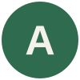
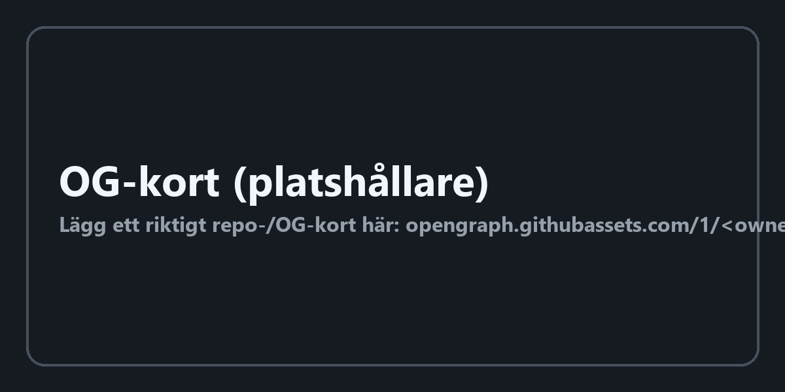

<!DOCTYPE html>
<html lang="en">
<head>
<meta charset="utf-8"/>
<title>skills-beat</title>
<link href="https://fonts.googleapis.com/css2?family=Fraunces:opsz,wght@9..144,500..900&family=Inter:wght@400;500;600;700&family=JetBrains+Mono:wght@400;500;700&display=swap" rel="stylesheet">
<style>
/*  skills-beat — three ways to show "skills" on the word. 1080x1920.
      ?mode=slash   the Claude UI, /skills typed, the command menu drops open
      ?mode=repo    the REAL anthropics/skills GitHub card, pushed in on the star count
      ?mode=tree    the repo's REAL folder list, scrolled and pulled out of

    Folder names and the star count are pulled from the live GitHub API, not invented.
    The one-line descriptions in ?mode=slash are restatements of the folder names —
    they are the only text here that is not sourced, so check them if they go on screen.

    Same grammar as ai-new-chat: push in on the detail, pull out to the whole thing,
    and only then let the identity land.                                              */
:root{
  --T:6s; --ease:cubic-bezier(.16,1,.3,1);
  --paper:#F0EDE4;  
  --ink:#141413; --muted:#8C8A85; --line:#E3E1DB; --coral:#D97757; --link:#2C6BD4;
  --serif:"Fraunces",Georgia,serif; --ui:"Inter",-apple-system,sans-serif;
  --mono:"JetBrains Mono",monospace;
}
*{box-sizing:border-box;margin:0;padding:0}
html,body{width:1080px;height:1920px;overflow:hidden}
body{
  background:var(--paper);font-family:var(--ui);
}
#cam{position:absolute;inset:0;transform-origin:540px 960px}

/* ══ shared bits ══ */
.card{background:#fff;border:1px solid var(--line);border-radius:26px;
  box-shadow:0 2px 3px rgba(20,20,19,.05),0 18px 44px rgba(20,20,19,.07)}
.lock{position:absolute;left:0;right:0;display:flex;align-items:center;justify-content:center;gap:20px}
.lock .mark{width:86px;height:86px;flex:none;animation:markIn var(--T) var(--ease) infinite both}
.lock .mark img{width:100%;height:100%;display:block;object-fit:contain}
.lock .wm{font-family:var(--serif);font-weight:600;font-size:98px;color:var(--ink);
  letter-spacing:-.015em;line-height:1.18;white-space:nowrap;overflow:hidden;width:0;
  animation:writeOn var(--T) var(--ease) infinite both}
@keyframes markIn{
  0%,52%{opacity:0;transform:scale(.3) rotate(-120deg)}
  62%{opacity:1;transform:scale(1) rotate(0)}
  93%{opacity:1;transform:scale(1) rotate(0)} 100%{opacity:0;transform:scale(1) rotate(0)}}
@keyframes writeOn{
  0%,56%{width:0;opacity:1} 70%{width:var(--wmW,276px);opacity:1}
  93%{width:var(--wmW,276px);opacity:1} 100%{width:var(--wmW,276px);opacity:0}}

/* ══ mode=slash ══ */
#composer{position:absolute;left:100px;top:800px;width:880px;height:190px}
#line{position:absolute;left:34px;top:40px;height:52px;font-size:44px;line-height:52px;
  font-weight:600;color:var(--coral);white-space:nowrap;overflow:hidden;width:0;
  animation:typeOn var(--T) steps(7,end) infinite both}
@keyframes typeOn{0%,4%{width:0} 30%,100%{width:var(--lineW,168px)}}
#caret{position:absolute;top:42px;width:4px;height:48px;
  animation:caretMove var(--T) steps(7,end) infinite both}
#caret i{display:block;width:100%;height:100%;background:var(--coral);
  animation:blink .9s steps(1) infinite}
@keyframes caretMove{0%,4%{left:34px;opacity:1} 30%{left:var(--caretEnd,202px);opacity:1}
  36%,100%{left:var(--caretEnd,202px);opacity:0}}
@keyframes blink{50%{opacity:0}}
#bar{position:absolute;left:34px;right:34px;bottom:26px;height:44px;
  display:flex;align-items:center;justify-content:space-between;
  font-size:26px;font-weight:500;color:var(--muted)}
#menu{padding:14px 0}
#menu .row{display:flex;align-items:center;gap:20px;padding:19px 26px;border-radius:16px;
  animation:rowIn var(--T) var(--ease) infinite both}
#menu .row .ic{width:44px;height:44px;border-radius:11px;background:#F2EFE7;flex:none;
  display:flex;align-items:center;justify-content:center}
#menu .row .ic svg{width:24px;height:24px;fill:none;stroke:var(--coral);stroke-width:2;
  stroke-linecap:round;stroke-linejoin:round}
#menu .row b{font:600 30px var(--mono);color:var(--ink)}
#menu .row span{font-size:26px;color:var(--muted);margin-left:auto}
#menu .row.on{background:#F4F1E9}
@keyframes rowIn{
  0%,34%{opacity:0;transform:translateY(18px)}
  44%{opacity:1;transform:translateY(0)}
  93%{opacity:1;transform:translateY(0)} 100%{opacity:0;transform:translateY(0)}}
#menuCard{position:absolute;left:100px;top:1010px;width:880px;height:0;overflow:hidden;
  animation:menuOpen var(--T) var(--ease) infinite both}
@keyframes menuOpen{
  0%,30%{height:0;opacity:0} 44%{height:452px;opacity:1}
  93%{height:452px;opacity:1} 100%{height:452px;opacity:0}}
@keyframes menuOpenHalf{0%,30%{height:0;opacity:0} 44%{height:404px;opacity:1}
  93%{height:404px;opacity:1} 100%{height:404px;opacity:0}}
body.half #menuCard{animation-name:menuOpenHalf}

/* ══ mode=repo ══ */
#og{position:absolute;left:60px;top:760px;width:960px;
  animation:ogIn var(--T) var(--ease) infinite both}
#og img{width:100%;display:block;border-radius:22px}
@keyframes ogIn{
  0%{opacity:0;transform:translateY(60px)} 10%{opacity:1;transform:translateY(0)}
  93%{opacity:1;transform:translateY(0)} 100%{opacity:0;transform:translateY(0)}}
#ring{position:absolute;border:6px solid var(--coral);border-radius:20px;
  animation:ringIn var(--T) var(--ease) infinite both}
@keyframes ringIn{
  0%,8%{opacity:0;transform:scale(.5)} 18%{opacity:1;transform:scale(1)}
  30%{transform:scale(.95)} 40%{transform:scale(1)}
  62%{opacity:1} 70%,100%{opacity:0}}

/* ══ mode=tree ══ */
#repohead{position:absolute;left:70px;top:430px;display:flex;align-items:center;gap:22px;
  animation:ogIn var(--T) var(--ease) infinite both}
#repohead .gh{width:74px;height:74px}
#repohead .nm{font:500 46px var(--ui);color:var(--ink)}
#repohead .nm b{font-weight:700}
#stars{position:absolute;right:70px;top:436px;display:flex;align-items:center;gap:12px;
  background:#fff;border:1px solid var(--line);border-radius:999px;padding:12px 22px;
  font:600 30px var(--ui);color:var(--ink);
  animation:ogIn var(--T) var(--ease) infinite both;animation-delay:calc(var(--T)*.03)}
#stars svg{width:28px;height:28px;fill:#EAC54F;stroke:#D4A72C;stroke-width:1.2}
#tree{position:absolute;left:70px;top:560px;width:940px;padding:12px 0;overflow:hidden}
#tree .r{display:flex;align-items:center;gap:20px;padding:15px 30px;
  font:500 32px var(--mono);color:var(--ink);
  animation:rowIn var(--T) var(--ease) infinite both}
#tree .r svg{width:30px;height:30px;fill:var(--coral);flex:none}
#tree .r i{font-style:normal;font-size:24px;color:var(--muted);margin-left:auto;
  font-family:var(--ui)}

/* ── ?fit=half — laid out FOR the coral half (1000x880), not scaled into it ── */
body.half{width:1000px;height:880px;background:transparent;background-image:none}
body.half #cam{animation:none;transform:none;position:absolute;inset:0}
body.half .lock{top:24px;height:96px;gap:16px}
body.half .lock .mark{width:64px;height:64px}
body.half .lock .wm{font-size:74px}
body.half @keyframes writeOn{}
body.half #composer{left:60px;top:150px;width:880px;height:150px;border-radius:22px}
body.half #line{left:28px;top:32px;font-size:38px;height:46px}
body.half #caret{top:34px;height:42px}
body.half #bar{left:28px;right:28px;bottom:18px;height:34px;font-size:22px}
body.half #menuCard{left:60px;top:316px;width:880px}
body.half @keyframes menuOpen{0%,30%{height:0;opacity:0}44%{height:404px;opacity:1}
  93%{height:404px;opacity:1}100%{height:404px;opacity:0}}
body.half #menu{padding:10px 0}
body.half #menu .row{padding:14px 22px;gap:16px}
body.half #menu .row .ic{width:36px;height:36px;border-radius:9px}
body.half #menu .row b{font-size:26px} body.half #menu .row span{font-size:22px}
</style>
</head>
<body>
<div id="cam"></div>

<script>
const MODE = new URLSearchParams(location.search).get("mode") || "slash";
if (new URLSearchParams(location.search).get("fit") === "half") {
  document.body.classList.add("half");
  document.documentElement.style.cssText = "width:1000px;height:880px;overflow:hidden";
}
const cam = document.getElementById("cam");
const r = document.documentElement.style;
const FOLDER = '<svg viewBox="0 0 24 24"><path d="M3 6a2 2 0 0 1 2-2h4l2 2.5h8a2 2 0 0 1 2 2V18a2 2 0 0 1-2 2H5a2 2 0 0 1-2-2Z"/></svg>';
const STAR = '<svg viewBox="0 0 24 24"><path d="m12 3 2.8 5.7 6.2.9-4.5 4.4 1 6.2-5.5-2.9-5.5 2.9 1-6.2L3 9.6l6.2-.9Z"/></svg>';
const SPARK = '<svg viewBox="0 0 24 24"><path d="M12 3v5M12 16v5M3 12h5M16 12h5"/><path d="m6.9 6.9 3.2 3.2M13.9 13.9l3.2 3.2M17.1 6.9l-3.2 3.2M10.1 13.9l-3.2 3.2"/></svg>';

/* real folder names, read from the live anthropics/skills repo */
const SKILLS = [
  ["skill-creator",       "create a new skill"],
  ["mcp-builder",         "build an MCP server"],
  ["webapp-testing",      "test a web app"],
  ["brand-guidelines",    "apply a brand system"],
  ["canvas-design",       "lay out a canvas"],
];
const ALL = ["algorithmic-art","brand-guidelines","canvas-design","claude-api","doc-coauthoring",
  "docx","frontend-design","internal-comms","mcp-builder","pdf","pptx","skill-creator",
  "slack-gif-creator","theme-factory","web-artifacts-builder","webapp-testing","xlsx"];

if (MODE === "slash") {
  cam.innerHTML = `
    <div class="lock" style="top:560px;height:120px">
      <span class="mark"></span>
      <span class="wm">Claude</span>
    </div>
    <div id="composer" class="card">
      <div id="line">/skills</div>
      <div id="caret"><i></i></div>
      <div id="bar"><span>+</span><span>Opus 4.8</span></div>
    </div>
    <div id="menuCard" class="card"><div id="menu">${SKILLS.map((s,i)=>
      `<div class="row${i===0?" on":""}" style="animation-delay:calc(var(--T)*${(i*0.012).toFixed(3)})">
         <span class="ic">${SPARK}</span><b>/${s[0]}</b><span>${s[1]}</span></div>`).join("")}</div></div>`;
  /* push in on the slash command while it types, then pull out over the menu */
  cam.animate([
    {transform:"translate(360px,140px) scale(2.4)", offset:0,    easing:"linear"},
    {transform:"translate(360px,140px) scale(2.4)", offset:.30,  easing:"cubic-bezier(.16,1,.3,1)"},
    {transform:"translate(0,0) scale(1)",           offset:.56},
    {transform:"translate(0,0) scale(1)",           offset:.93},
    {transform:"translate(0,0) scale(1.03)",        offset:1},
  ], {duration:6000, iterations:Infinity});

} else if (MODE === "repo") {
  cam.innerHTML = `
    <div id="og"></div>
    <div id="ring" style="left:600px;top:1140px;width:190px;height:120px"></div>`;
  /* open pushed in on the star count, pull out to the whole card */
  cam.animate([
    {transform:"translate(-80px,-330px) scale(2.5)", offset:0,   easing:"linear"},
    {transform:"translate(-80px,-330px) scale(2.5)", offset:.34, easing:"cubic-bezier(.16,1,.3,1)"},
    {transform:"translate(0,0) scale(1)",            offset:.60},
    {transform:"translate(0,0) scale(1)",            offset:.93},
    {transform:"translate(0,0) scale(1.03)",         offset:1},
  ], {duration:6000, iterations:Infinity});

} else { /* tree */
  cam.innerHTML = `
    <div id="repohead">
      <span class="nm">anthropics / <b>skills</b></span></div>
    <div id="stars">${STAR} 166,852</div>
    <div id="tree" class="card">${ALL.map((n,i)=>
      `<div class="r" style="animation-delay:calc(var(--T)*${(i*0.008).toFixed(3)})">
         ${FOLDER}${n}<i>skill</i></div>`).join("")}</div>`;
  /* drift down the list, then pull out so the whole repo lands at once */
  cam.animate([
    {transform:"translate(0,-360px) scale(1.55)", offset:0,   easing:"linear"},
    {transform:"translate(0,300px) scale(1.55)",  offset:.46, easing:"cubic-bezier(.16,1,.3,1)"},
    {transform:"translate(0,0) scale(1)",         offset:.70},
    {transform:"translate(0,0) scale(1)",         offset:.93},
    {transform:"translate(0,0) scale(1.03)",      offset:1},
  ], {duration:6000, iterations:Infinity});
}

/* measure the real widths so the type-on and the wipe stop exactly on the glyphs */
requestAnimationFrame(() => {
  const line = document.getElementById("line");
  if (line) {
    const w = Math.ceil(line.scrollWidth) + 2;
    r.setProperty("--lineW", w + "px");
    r.setProperty("--caretEnd", (34 + w) + "px");
  }
  const wm = document.querySelector(".wm");
  if (wm) {
    const p = document.createElement("span");
    p.style.cssText = `position:absolute;visibility:hidden;white-space:nowrap;
      font-family:var(--serif);font-weight:600;font-size:98px;letter-spacing:-.015em`;
    p.textContent = wm.textContent;
    document.body.appendChild(p);
    r.setProperty("--wmW", Math.ceil(p.getBoundingClientRect().width) + 4 + "px");
    p.remove();
  }
});

/* ?seek=<seconds> — pause every animation at one instant. Lets a headless shot land on
   the settled frame instead of wherever the 6s loop happened to be. */
(() => {
  const s = new URLSearchParams(location.search).get("seek");
  if (s === null) return;
  const go = () => document.getAnimations().forEach(a => { a.pause(); a.currentTime = parseFloat(s) * 1000; });
  requestAnimationFrame(() => requestAnimationFrame(() => { go(); setTimeout(go, 250); }));
})();
</script>
</body>
</html>
